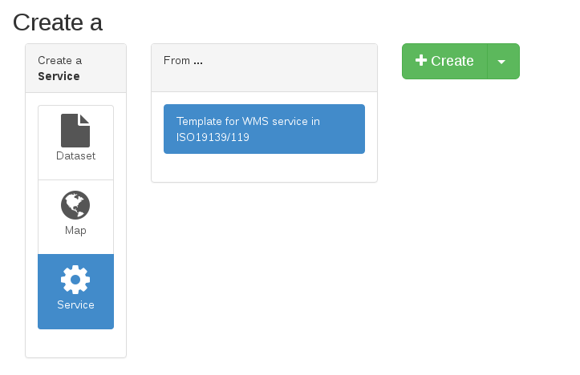
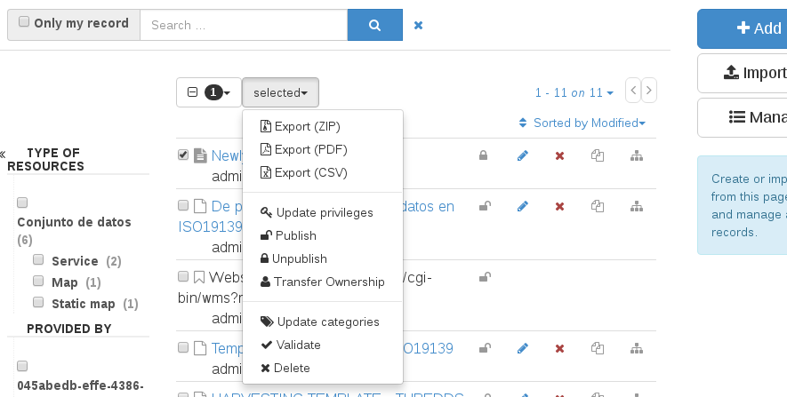

Рэдагаваць¶
Каб дадаць новыя метаданыя, вы павінны ўвайсці ў панэль рэдактара: http://localhost:8080/geonetwork/srv/eng/catalog.edit#/board

Там вы можаце націснуць на сінюю кнопку «Дадаць новы запіс» справа, каб стварыць новыя метададзеныя. У залежнасці ад схемы, абранай на папярэдніх кроках, вам будуць прапанаваны розныя шаблоны для пачатку новых метададзеных.
Пасля выбару шаблону і націску на зялёную кнопку «Стварыць» справа адкрыецца рэдактар з толькі што створанымі метададзенымі. Вы можаце запоўніць і змяніць неабходныя значэнні, а затым націснуць на сіні значок захавання.

Пасля захавання і закрыцця рэдактара вашы метададзеныя ўжо знаходзяцца ў вашым каталогу. Вы можаце знайсці яго на галоўнай старонцы або ў панэлі рэдактара.
Калі вы хочаце, каб вашы метададзеныя былі агульнадаступнымі, вам таксама варта змяніць прывілеі, каб група «Усе», якая прадстаўляе ананімных карыстальнікаў, магла іх бачыць. Каб зрабіць гэта, вярніцеся да панэлі рэдактара: http://localhost:8080/geonetwork/srv/eng/catalog.edit#/board
Выберыце метаданыя, якія вы хочаце апублікаваць, і ў верхнім меню абярыце опцыю «Апублікаваць». Цяпер вашы метададзеныя агульнадаступныя ў вашым каталогу. Калі вы атрымліваеце доступ з ананімнай укладкі, вашы метададзеныя бачныя.
Глядзіце больш на Рэдагаванне метададзеных.